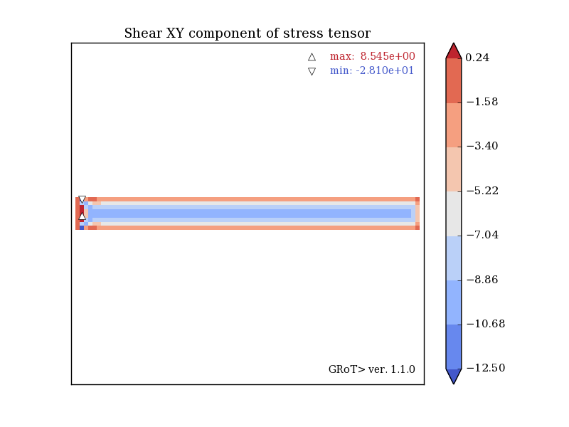
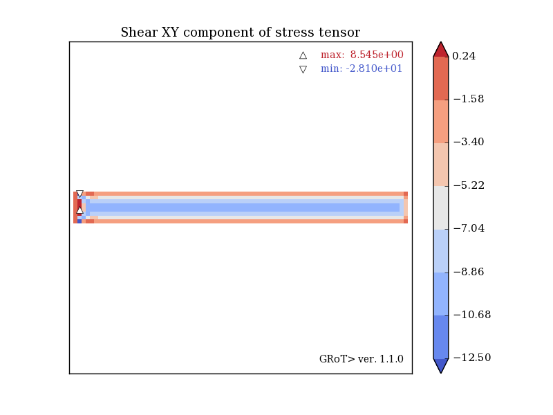
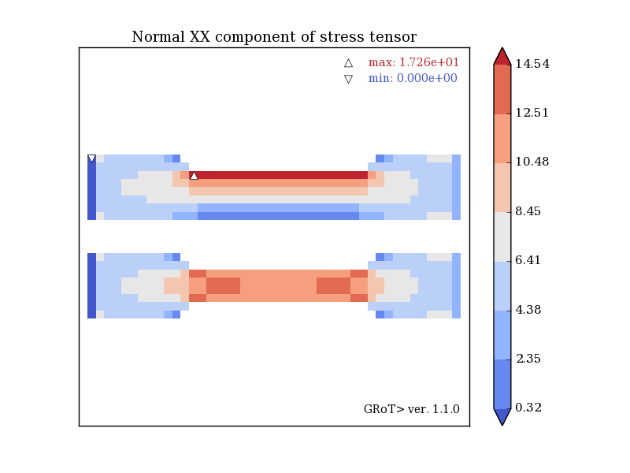
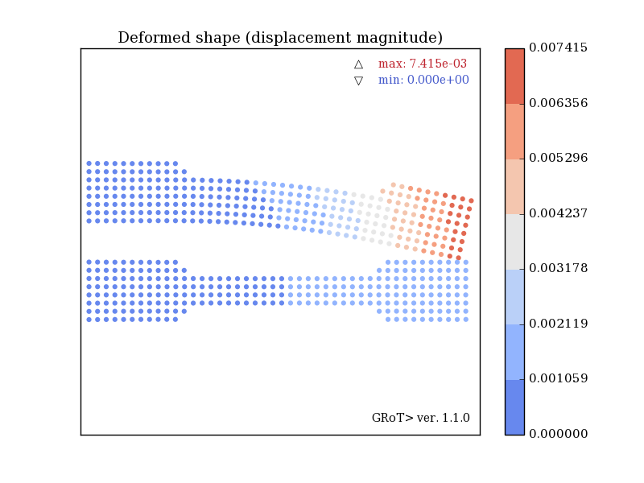
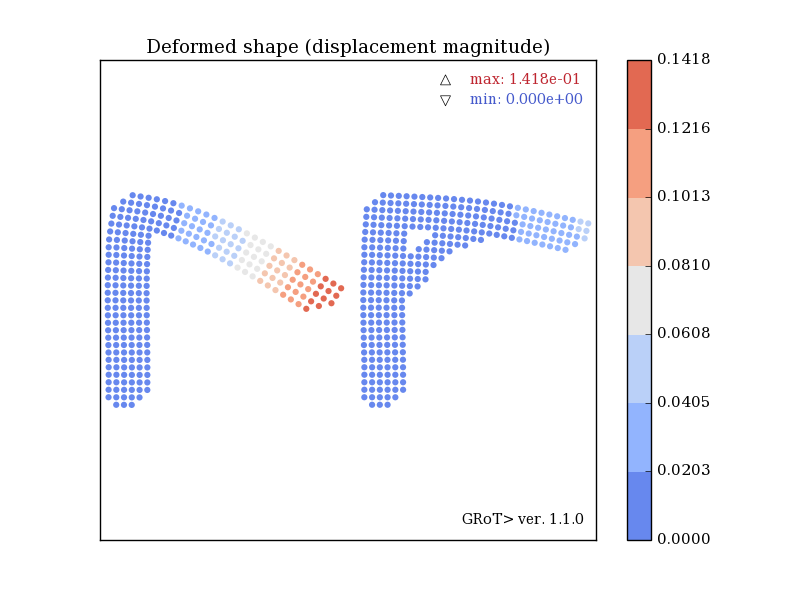
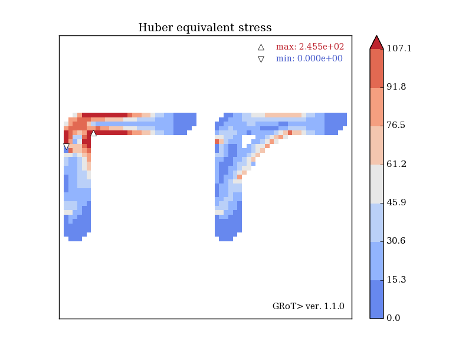
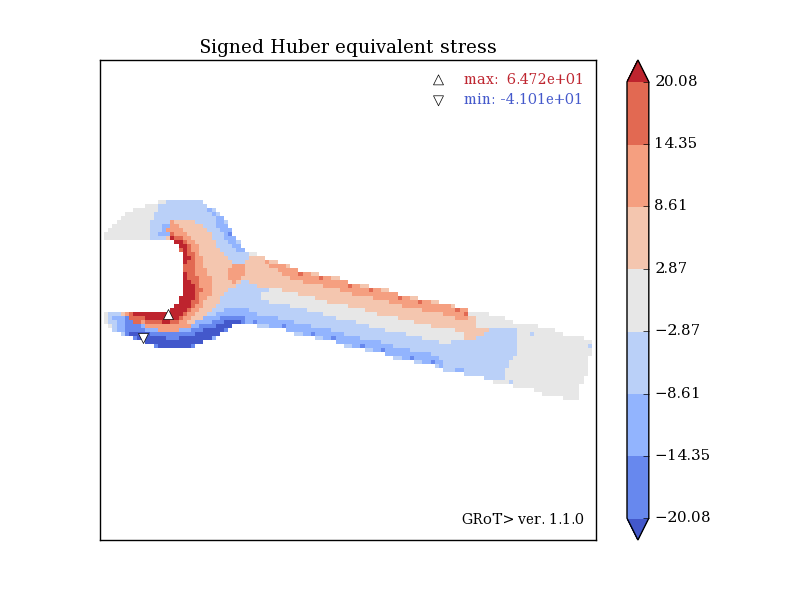

Rectangular beam with bending force applied to its right end. An excellent example of the shear locking phenomenon that occurs for linear finite elements. Bending stresses are underestimated (331 MPa compared to 375 MPa for analytical calculations), overestimated shear stresses (10 MPa vs. 6 MPa), and beam displacement again underestimated.
 

The beams are supported at the left end, while the tensile force is applied to the right. Both beams are of the same dimensions. Also the dimensions of the prepared cutouts are identical with the difference that the top beam has only one cut-out on the top, while the bottom beam has two symmetrical cut-outs on the top and bottom. Despite the difference in cross-sectional areas, the asymmetrically cut beam is more stressed, and not the other way (17 MPa and 15 MPa normal stress). This is all due to the additional bending caused by the difference in the position of the center of cross section and the force application point.
 Both brackets are of the same overall dimensions and are vertically loaded in the same direction. The bracket with additional brace is clearly less bent and less strained.
 The example and geometry comes from the examples of the Z88 Aurora (highly recommended!) Link: Z88. The result shows the Huber stress of sign of hydrostatic state. This allows to read additional information about tension or compression of the components, since the Huber stresses for the tensile elements are with "+" and for the compressed elements with "-".
Huber stress of word GRoT>. Have fun!